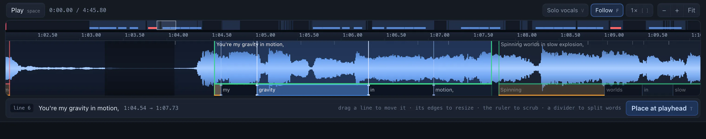
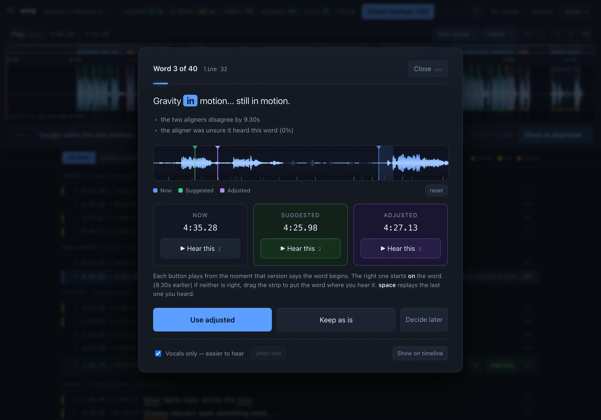

A track and a text file in. Synced lyrics and a finished video out. Nothing leaves your machine.
.lrc · word .lrc · .srt · .vtt · .ass · .mp4
The premise
So this is forced alignment, not transcription. A chorus that repeats four times resolves by position, for free.

Demucs isolates the vocal — aligning against the stem rather than the mix is the single biggest accuracy win on dense productions. wav2vec2 CTC anchors the structure in one global pass, so a 4-bar instrumental is absorbed as blanks instead of sliding the rest of the song. Whisper then refines inside each ~20-second section, where it is both accurate and precise.
All three are told the lyrics, so all three can be confidently wrong in the same place. A fourth pass is told nothing and reports what it hears. It is the strongest single signal in the merge — and it is what finds the chorus repeat somebody forgot to type.
Run against a deliberately degraded alignment the mean score falls from 94.5 to 69.9 and lines needing review go from 2 to 11. It discriminates.
Where models disagree
Two aligners agreed on 137 of 177 words — you never see those. The rest play you both candidates. If neither is right, drag a third onto the waveform.

Snapping every word start to its nearest onset. It looks like free accuracy, but on this track 41% of word starts have more than one onset within ±150 ms — snapping would be a coin flip wearing a lab coat. Where two models disagree and both readings are plausible, no heuristic settles it honestly, so an ear does.
The whole track
Colour means act here and nothing else.
Five minutes to align a five-minute track. Thirteen more to render it.
./setup.sh
./.venv/bin/python -m songpython -m song # open the app
python -m song track.wav lyrics.txt # align, then open it
python -m song audit workdir/my-track # repair + list what needs an ear
python -m song score workdir/my-track # re-run the benchmark on your edits
python -m song video workdir/my-track # render karaoke.mp4Everything lands in workdir/<track>/:
lyrics.lrc, lyrics.word.lrc,
lyrics.srt, .vtt, and
project.json — word timings, per-line scores and the
scorecard. song video adds lyrics.ass and
karaoke.mp4.
Lyrics input is plain text: one line per lyric line, a blank line between sections, a header naming each. Demucs on Apple MPS is broken under torch 2.5, so it is CPU throughout.